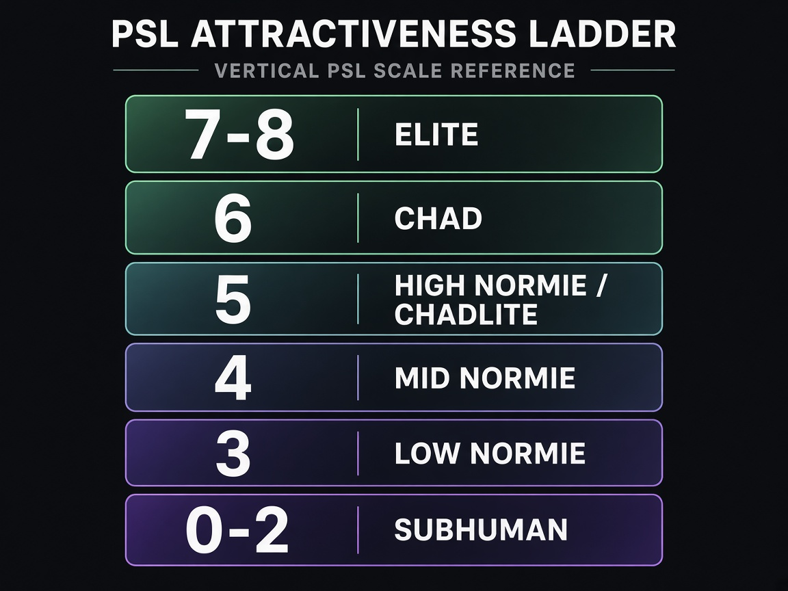

What Is the PSL Scale? Understanding Facial Ratings
If you spend any time on looksmaxxing TikTok, you’ve seen the labels: LTN, MTN, HTN, Chadlite, Chad, sub5. Behind that slang is the PSL scale, a facial rating system that tries to map attractiveness onto a shared ladder.
This guide explains what the PSL scale is, what the tiers mean, what raters claim to measure, and how to use a score as a baseline without treating it like destiny.
What does PSL stand for?
PSL originally referred to three older aesthetics forums: PUAHate, SlutHate, and Lookism. Over time, the name stuck to the rating system those communities popularized. Some people also read it as “perceived sexual levels,” but the forum acronym is the historical one.
Mainstream coverage, including GQ’s look at the PSL scale, notes that the culture around it can be harsh and subjective. Treat the scale as internet language for facial aesthetics, not a clinical test.
What is the PSL scale?
The PSL scale is usually a roughly 1 to 8 facial attractiveness ladder. Forums assume looks follow a bell curve, with most people near the middle and very few at the extremes. On that model, 4 is average.
That design was meant to fight “polite” 1 to 10 ratings, where an average face gets called a 6 or 7. With 4 as the midpoint, each number is supposed to mean a clearer place on the curve.
Important caveat: thresholds vary by community and app. One guide’s “Chadlite” can sit a half point away from another’s. Use bands more than fake precision like 4.27.

What does a PSL rating measure?
Serious raters (human or AI) usually weigh a few buckets, not one feature in isolation:
- Harmony: do eyes, nose, lips, and jaw work together?
- Dimorphism: how clearly masculine or feminine the face reads
- Angularity / structure: jaw, cheeks, brow, and how soft tissue sits on bone
- Detail features: skin, brows, under-eyes, teeth, nose shape, contrast
Some deep raters also talk about ratios and angles, such as canthal tilt or eye-area ideals like hunter eyes. One strong trait rarely carries a whole score if harmony is weak.
PSL scale chart: common tiers
Exact cutoffs differ, but this is the map most guides use. Female labels often swap Normie for Becky and Chad for Stacy.
| PSL range | Common male label | What it usually means |
|---|---|---|
| Under ~3 | Sub 3 / lowest bands | Clearly below average to most raters. Online slang here is often extreme. |
| ~3 to 3.5 | LTN (low-tier normie) | Below average, with noticeable weak points. |
| ~4 to 4.5 | MTN (mid-tier normie) | Average. The middle of the curve by design. |
| ~5 to 5.5 | HTN (high-tier normie) | Above average. Strong everyday attractiveness. |
| ~6 to 6.5 | Chadlite | Model / actor territory with maybe one or two weaker traits. |
| ~7 to 7.5 | Chad | Rare top-tier facial attractiveness. |
| ~8 | True Adam / ceiling | Forum “perfect face” talk. Not a realistic everyday target. |
PSL slang you’ll see everywhere
- LTN / MTN / HTN: low, mid, and high-tier normie
- Sub5: below 5. On TikTok it is often used as an insult, even though most people sit under HTN by the scale’s own design
- Chadlite / Chad: upper bands for men (Stacylite / Stacy for women)
- True Adam / True Eve: mythical ceiling labels
- Mog / mogged: looking better than someone next to you. See What Does Mogging Mean?
- Ascend: moving up a tier through looksmaxxing
What is a good PSL score?
By the scale’s own logic:
- 4 is average, not “ugly”
- 5+ is clearly above average
- 5.5+ is a strong everyday face in forum math
- 6+ is rare
Most people who actually post for ratings land somewhere around 3.5 to 5. That is normal. A useful goal is improvement from your baseline, not chasing True Adam discourse.

Why PSL ratings disagree so often
If two people rate the same face differently, that does not mean you “broke” the scale. Common reasons:
- Different photos, lighting, lens distance, and angles
- Different weighting of harmony vs dimorphism vs skin
- Harsh teenage raters vs calmer adult observers
- Guides that place the same label at different numbers
A rating describes one photo under one system. It is not a permanent identity.
How to estimate your PSL more fairly
- Take a straight-on front photo in soft daylight
- Camera at eye level, arm’s length or farther, no beauty filter
- Neutral expression, hair off the face
- Get a score from one consistent system, then read the band
- Repeat with two more photos from the same setup
If the results cluster, that is a more honest estimate than one rushed selfie in a Discord thread.
Get a clearer PSL-style baseline
Instead of collecting random ratings, use one structured scan. iMog gives you an Attractiveness Score, a PSL-style band, and trait breakdown so you know what to improve next.
Analyze your face with iMog
Can you raise your PSL rating?
Bone structure sets a range. Soft tissue, skin, grooming, body composition, posture, and photo skill still move how a face reads. That is why looksmaxxing for beginners starts with fundamentals instead of surgery talk.
- Sleep and lower facial puffiness
- Clearer skin and smarter haircut / brows
- Healthier body composition where relevant
- Better posture and consistent photo setup
Skip extreme forum lore that promises bone miracles overnight. Track changes under the same conditions every few weeks.
PSL scale vs Attractiveness Score
- Attractiveness Score: usually a continuous number (for example 7.8 / 10)
- PSL band: the ladder label that number maps into (MTN, HTN, Chadlite, Chad…)
iMog is built around both: a clear score you can track, plus the band language people actually search for.
Frequently asked questions about the PSL scale
What does PSL mean in looksmaxxing?
It refers to a facial rating system that grew out of older aesthetics forums. Today it usually means a 1 to 8 style ladder with labels like normie, Chadlite, and Chad.
Is 5.5 a good PSL score?
Yes. On most charts, 5.5 sits in high-tier normie territory and is clearly above average. Exact percentiles depend on the guide, since the famous “bell curve” is assumed, not measured from a global dataset.
What is the average PSL score?
By design, about 4. Mid-tier normie is the middle of the ladder, not a failure state.
What does sub5 mean?
Below PSL 5. Online it is often used as an insult, but the scale puts most people under HTN on purpose. Context matters more than the meme.
Is the PSL scale scientific?
No. It is a community convention with useful vocabulary and real aesthetic cues, but it is not a validated clinical measure. Use it as a structured opinion system, especially when photo conditions stay consistent.
How can I find my PSL rating?
Take clean front-face photos and rate them in one consistent system. A scan in iMog gives you an Attractiveness Score and PSL-style band without relying on random comment sections.
Bottom line
The PSL scale is the shared language of modern looksmaxxing facial ratings. Learn the tiers, understand what raters claim to measure, then use a stable baseline to guide habits. The score is a map. It is not the whole territory.
Know your starting point on the ladder
Stop guessing your band from TikTok comments. Use iMog to explore your Attractiveness Score, PSL-style rating, and the traits that move the number.
Start your facial analysis with iMog